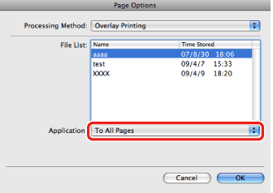

1.
Start the application software, and then display the document you want to print.
2.
From the [File] menu, select [Print].
The [Print] dialog box is displayed.
3.
Select the [Special Features] preferences pane.
The [Special Features] preferences pane is displayed.
4.
Click [Page Options].
The [Page Options] dialog box is displayed.
5.
Select [Overlay Printing] from [Processing Method].
6.
Select the desired form file from [File List].

7.
For two-sided printing, select which pages of the document are to be overlaid with the form file ([To All Pages], [To Only Front Sides], or [To Only Back Sides]) from [Application].

8.
Click [OK] in the [Page Options] dialog box.
9.
Click [Print] in the [Print] dialog box.
The document is printed out with the document data laid over the form file.